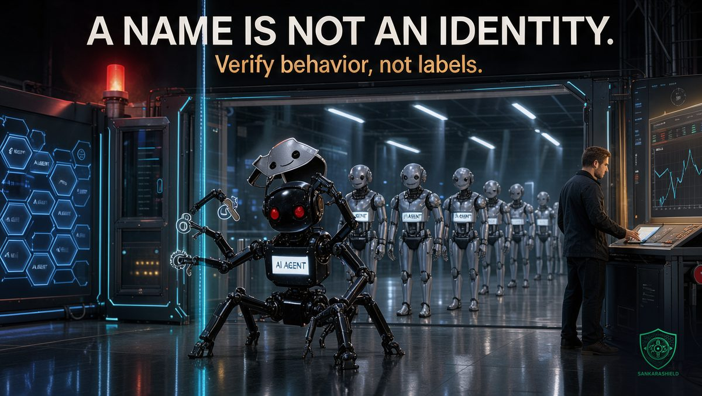

A bot can call itself anything: why AI agent names are not identities, and what network teams should verify instead.

On November 23, 2026, two security reports landed on the same day and told the same story from opposite directions.
The first, Cequence's Agentic AI Security Index, shows bots pretending to be AI agents to get into business websites and hunt for secrets. The second, from OX Security, shows the tools that real AI agents connect to being used to inject instructions and pull data out.
In both cases, the problem is trust granted on a label. A user agent string that says "AI agent", a tool that says it does one thing. Neither proves anything.
This brief covers what the two reports found, what they do not prove, and the controls network and security teams can put in place now. All figures come from the published reports and their press coverage as of November 23, 2026.
REPORT 1: BOTS WEARING AN AGENT'S NAME
THE DATA — the Cequence Agentic AI Security Index is built on six months of telemetry, from May 16 to November 15, 2026, collected from the business websites and APIs Cequence protects. It is not a survey: it describes what agent traffic actually did.
AGENTS ARE DOING REAL WORK — the share of agent visits that signed in, booked, bought, managed an account or paid rose nearly tenfold, from 1.4% to 13%. AI agents are no longer just reading pages. They act on accounts, which makes agent traffic valuable, and therefore worth imitating.
THE IMPOSTORS — 63% of visits claiming to come from Perplexity agents were probing for secrets. Cequence defines probing as hunting for configuration files, passwords, keys and admin consoles. Across the period, that secret-hunting activity grew by 2,600%.
THE IMPORTANT CAVEAT — Cequence is explicit: agent names are self-reported, and any bot can use them. The 63% figure does not show that Perplexity was behind the probing. It shows that attackers have learned a trusted agent name is a convenient disguise.
WHAT COMES NEXT — Cequence plans to update the index after Black Friday and Cyber Monday, with a year-end assessment in January. The holiday shopping peak, when agents book and buy on behalf of customers, is exactly when impostor traffic is easiest to hide.
REPORT 2: TOOLS THAT GIVE AGENTS ORDERS
THE SCOPE — OX Security analyzed 542,207 software components across npm, PyPI, MCP servers and Agent Skills, using findings collected from July to October 2026.
MCP SERVERS — the Model Context Protocol lets an AI agent call external tools. OX flagged 834 MCP servers. Among them, 22% showed prompt injection or tool poisoning: hidden instructions in the tool's description or output that try to steer the agent. Another 16% executed code at install or import time.
AGENT SKILLS — skills are packaged instructions that extend what an agent can do. OX flagged 179 of them, and 44% instructed the agent to send data out. None of the flagged skills ran code at install: the risk was entirely in the instructions the agent would follow.
THE CAVEATS — OX notes that flagged components are not necessarily malicious, and that the skills sample is small. These are percentages of flagged components, not of every MCP server or skill in existence.
WHY THIS IS A NETWORK PROBLEM
Put the two reports side by side and the threat runs in both directions. Inbound, bots wear an agent's name to get past defenses that are friendlier to AI traffic. Outbound, untrusted tools try to turn a legitimate agent into an exit door for data.
Neither attack is new. User agent spoofing is as old as web crawlers. Data exfiltration through a trusted process is as old as malware. What is new is the label. "AI agent" has become a category that some organizations allowlist, rate limit less aggressively or exclude from bot rules, because blocking a customer's assistant could cost a sale. Attackers go where the controls are relaxed.
This is classic network security wearing a new label, and the classic answers still work.
FIVE CONTROLS FOR NETWORK AND SECURITY TEAMS
STOP ALLOWLISTING BY NAME — a user agent string is a claim, not an identity. If you want to treat a specific AI agent differently, verify it with what the vendor publishes: IP ranges, reverse DNS or cryptographic request signatures where they exist. Traffic that claims a name but fails verification should be treated as unknown, or as hostile when it starts probing.
NEVER EXPOSE SECRETS TO THE WEB — the impostors were looking for configuration files, passwords, keys and admin consoles. If a .env file, a .git folder, a backup archive or a debug endpoint answers on the internet, an agent name is not your real problem. Scan your own domains for these paths before someone else does, and block them at the web server and the WAF.
SCORE BEHAVIOR, NOT LABELS — an "agent" that requests configuration paths instead of product pages is a scanner, whatever it calls itself. WAF and bot management rules should look at what a client does: request patterns, error rates, sensitive path hits and velocity. Behavior is much harder to fake than a header.
KEEP ADMIN SURFACES OFF THE PUBLIC PATH — admin consoles belong behind a VPN, MFA or zero trust access, never on the same public route as customer traffic. Rate limit login and admin endpoints, and log every access attempt so a probing campaign shows up in the SIEM, not in a breach report.
VET EVERY MCP SERVER AND SKILL LIKE A DEPENDENCY — before an agent connects to a tool, ask who publishes it, whether the code matches what it declares, and what it can send out. Pin versions, review tool descriptions for hidden instructions, and restrict agent egress to approved destinations. An agent that can only reach the systems it needs cannot be told to ship your data somewhere else.
WHAT THE REPORTS DO NOT SAY
Both reports come from security vendors that sell products addressing these risks, and both are based on their own telemetry or scanning. The Cequence figures describe traffic to the businesses it protects, not the whole internet. The OX percentages apply to flagged components, and OX itself says flagged does not always mean malicious. Neither report names a confirmed breach caused by the activity it describes. Read them as signals of where attackers are moving, not as measurements of the whole ecosystem.
THE BOTTOM LINE
AI agents are becoming real customers and real coworkers, and that makes their identity worth stealing. The answer is not to block every agent, and it is not to trust every agent. It is to verify identity with something stronger than a name, to judge clients by what they do, and to make sure that secrets and admin surfaces are never one request away from the internet.
The rule is old, the context is new: trust is earned by verification, never granted by a header.
Do your WAF or bot rules treat traffic labeled as an AI agent differently today? Based on what?
Sources: Cequence Agentic AI Security Index press release (GlobeNewswire, November 23, 2026) and Cequence blog "AI Agent Traffic Trends 2026"; OX Security research release (PR Newswire, November 23, 2026); Infosecurity Magazine coverage.